Третье занятие
Третье
занятие
На этом
занятии мы начнем знакомство с CSS.
Каскадные
таблицы стилей или CSS — это
наборы стилей, характеризующие конкретные теги на странице.
Для начала создадим css-файл в директории нашего проекта (там уже есть одно изображение и файл index.html), для этого в Sublime Text 3 нажмем сочетание клавиш Ctrl+N для создания нового файла.
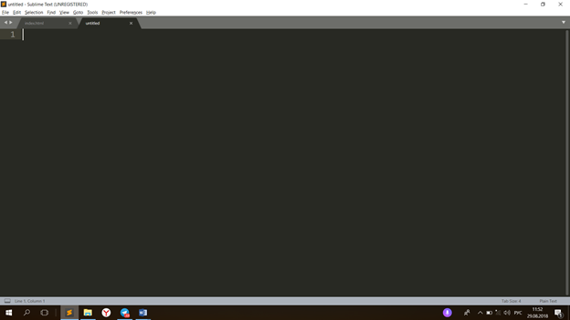
После этого файл нужно сохранить с названием main.css в директорию нашего проекта.
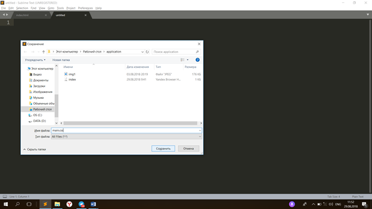
Нажимаем
Enter
и
сохраняем.
Далее,
необходимо подключить css-файл к
нашей веб-странице. Для этого в теге head
файла
index.html
пишем
слово link
и
нажимаем клавишу TAB.
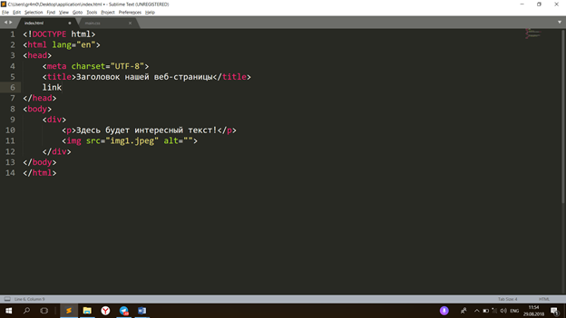
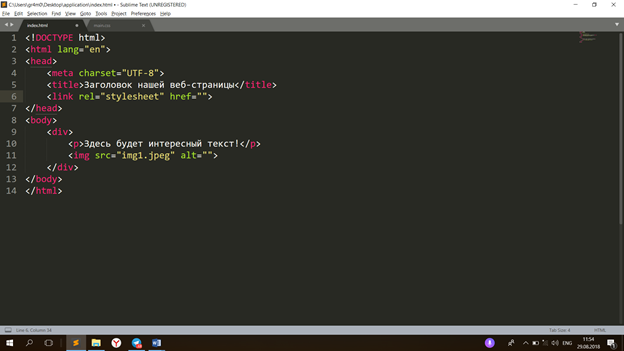
<link
rel="stylesheet"
href="">
Мы получили вот такую строчку. Тег link
отвечает
за подключение внешних файлов и зависимостей. Обратите внимание, что у него есть
несколько атрибутов, нас интересует атрибут href.
HyperReference
или
href — это
ссылка на внешний файл. С помощью него подключаем наш main.css
к
веб-странице.
Так как
main.css
находится
в той же директории, что и index.html, пишем в
атрибуте href
только
имя css-файла.
href=”main.css”
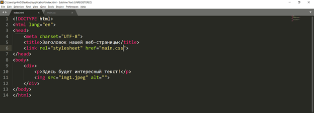
Отлично,
теперь переходим к файлу main.css
Поменяем
цвет фона нашей веб-страницы. Для этого пропишем в main.css
стили для
тега body:
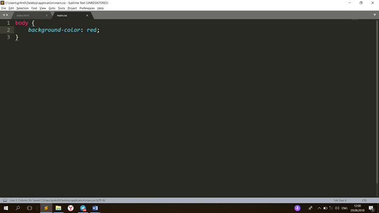
Сохраняем файл main.css, открываем в браузере файл index.html и перезагружаем страницу.
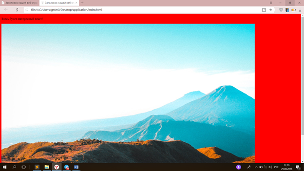
Если вы
все сделали правильно, то фон нашей страницы поменяется с белого на красный.
Теперь
открываем веб-инспектор сочетанием клавиш Ctrl+Shift+C
Нажимаем
на тег body
в
иерархии. Таким образом, в инспекторе мы можем отслеживать не только
html-разметку,
но и css-свойства
каждого тега.
Переходим
к знакомству с позиционированием элементов на
веб-странице.
Пока что закомментируем красный цвет фона body. Для этого выделяем интересующую нас часть кода и нажимаем сочетание клавиш Ctrl+/
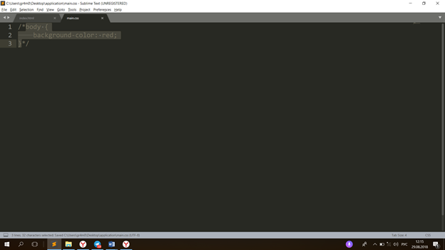
Итак,
позиционирование. Для начала рассмотрим три css-свойства:
·
margin —
внешний отступ
·
padding
— внутренний
отступ
·
box-sizing — модель
отображения отступов
Я советую вначале каждого файла стилей прописывать вот такие свойства:
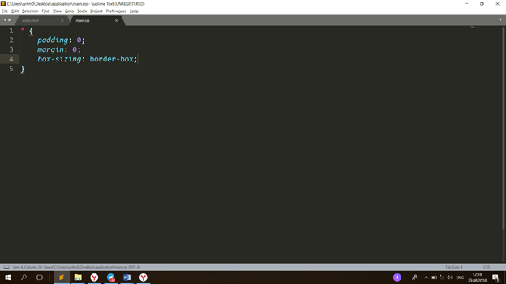
Звёздочка — это так называемый общий селектор тегов, это означает, что данные стили применяться ко всем тегам на странице. Таким образом, мы обнуляем все отступы у каждого тега на странице.
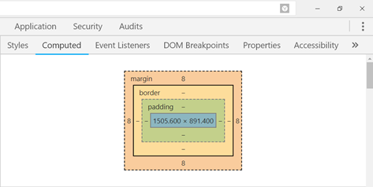
Вот так выглядит box-модель тега body. В синем прямоугольнике написаны значения свойств ширины и высоты в таком формате ширина x высота. Вот мы и подошли к изучению еще двух css-свойств width (ширины) и height (высоты). Для того чтобы потренироваться на практике в применении данных свойств пропишем ширину и высоту для нашего изображения.
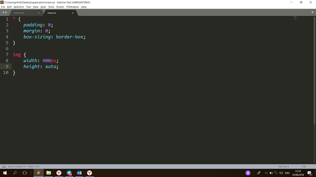
Ширина нашего изображения будет 900px, а высота будет вычисляться автоматически с сохранением пропорций исходного изображения.
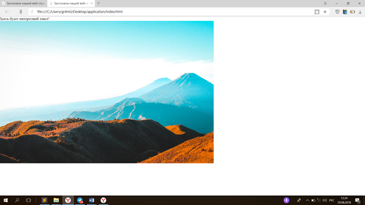
Дополним стили нашего изображения:
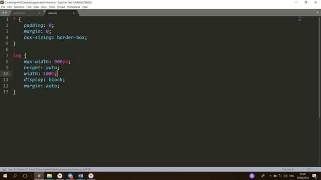
Максимальная ширина нашего изображения 900px, то есть если исходное изображение будет шириной больше, чем 900px, на нащей странице оно будет иметь фиксированный размер. Ширина — 100%. Таким образом, если изображение имеет ширину не превышающую 900px, то ширина будет равна исходной. Свойство display: block; пока оставим без объяснений, скажем лишь, что это свойство отвечает за отображение элемента. Свойство margin имеет значение auto. Это строчка стилей поможет нам отценрировать по горизонтали наше изображение.
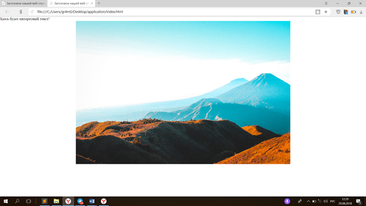
Вот,
что мы имеем по окончании
урока.